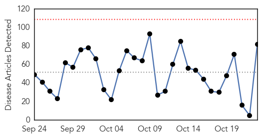
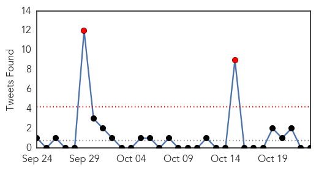
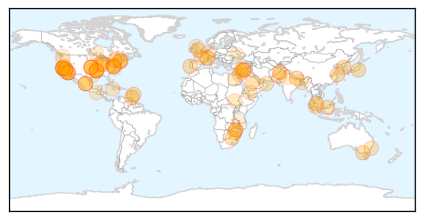
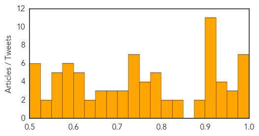

Toggle navigation
Early Warning
Daily Alerts
Unknown
Oct 23, 2015
Compare to:
-
Dengue Fever
Hemmorhagic Fever
Mold/Fungal Infection
Influenza
Meningitis
Pertussis / Whooping Cough
Middle East Respiratory Syndrome
Cholera
Hepatitis
Chikungunya
Yellow Fever
Bubonic Plague
West Nile Virus
Swine Flu
Ebola
Measles
Mumps
30 Day Trends
Web: 0
alerts
, 0
warnings
Twitter: 2
alerts
, 0
warnings
Top Articles:
Showing top 50 articles...
0.995
Flu vaccine clinic at State Fairgrounds set for October 27
0.995
Flu Vaccine Clinic Oct. 27 at State Fairgrounds
0.993
Five Deaths in Harare As Typhoid Continues to Spread
0.993
Flu season is here, protect yourself with a vaccination
0.978
Nepal government, WHO try to tackle scrub typhus epidemic
0.977
Outbreak in Neonatal Intensive Care Units in Jamaica poses no risk to TT
0.977
Shigella Outbreak from San Jose Restaurant Spreads to Other Regions
0.972
Shigella Outbreak: 93 people sick, dozen in intensive care after eating at South Bay restaurant
0.970
HKL treating typhoid patients - Nation
0.962
Foodborne and Waterborne Disease Outbreaks — United States, 1971–2012
0.949
Shigella outbreak affects over 100 people in California, Report
0.941
California Outbreak Grows
0.935
Meredith goat’s cheese maker’s million-dollar push to find Q fever vaccine
0.928
Flu shots available at State Fairgrounds Oct. 27
0.923
Cleanliness, non-infection and godliness
0.917
Chicago Tribune
0.917
Chicago Tribune
0.917
Chicago Tribune
0.917
Chicago Tribune
0.917
Chicago Tribune
0.917
Chicago Tribune
0.917
Chicago Tribune
0.917
Chicago Tribune
0.917
Chicago Tribune
0.917
Chicago Tribune
0.891
31 More Stricken with Shigella Linked to San Jose Restaurant
0.876
31 More Stricken with Shigella Linked to San Jose Restaurant
0.836
Moderate year for Lyme disease in northern New England
0.828
Typhoid under control in Perak, says Mah - Nation
0.824
Oman's health ministry formulates rules for medical treatment abroad at government cost
0.819
FOX5 San Diego – San Diego news, weather, traffic, sports from KSWB
0.799
Shigella Outbreak Puts 11 Diners at Restaurant in Intensive Care
0.796
Moderate year for Lyme disease in northern New England
0.791
Health department offering free youth flu shots
0.787
Health centers offer free syphilis testing in the North Country as infection soars
0.779
Chronic malnutrition to rise in Yemen on lack of water, poor sanitation
0.774
WHO Recommends Pilot Projects For Malaria Vaccine
0.756
NSW hospital to set up permanent poo transplantation program, ‘poo bank’
0.756
'Superbug' Infections Are On The Rise Among Children
0.753
Public Health Officials Wrap Up Investigation of Outbreak of Listeriosis Linked to Soft Cheeses
0.750
Coincidence or cluster? State seeks help to examine cancer cases in Henry County
0.748
Scarlet Fever alert issued to parents after suspected case at Manchester primary school
0.742
Chula Vista teen battling flesh-eating bacteria upgraded to seri
0.742
Chula Vista teen battling flesh-eating bacteria upgraded to seri
0.736
TB interventions among children in Zim remains low
0.734
Shift in vaccine use needed to eradicate polio
0.726
Health D-G: Claims typhoid spread by illegal ice factories untrue - Nation
0.707
Climate envoys endorse framework for UN pact in Paris
0.705
Russia holds Syria talks with US, Saudi Arabia and Turkey
0.705
'Drunk on defeat': Did France magnify Agincourt debacle?
Top Tweets:
No tweets found for Oct 23, 2015
Web/News Articles

Tweets

Article Locations

Article Confidences
